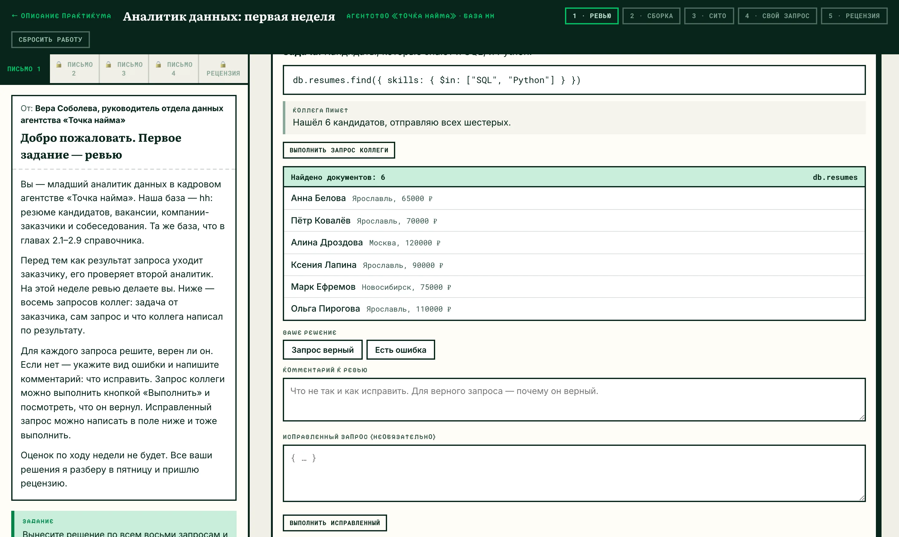
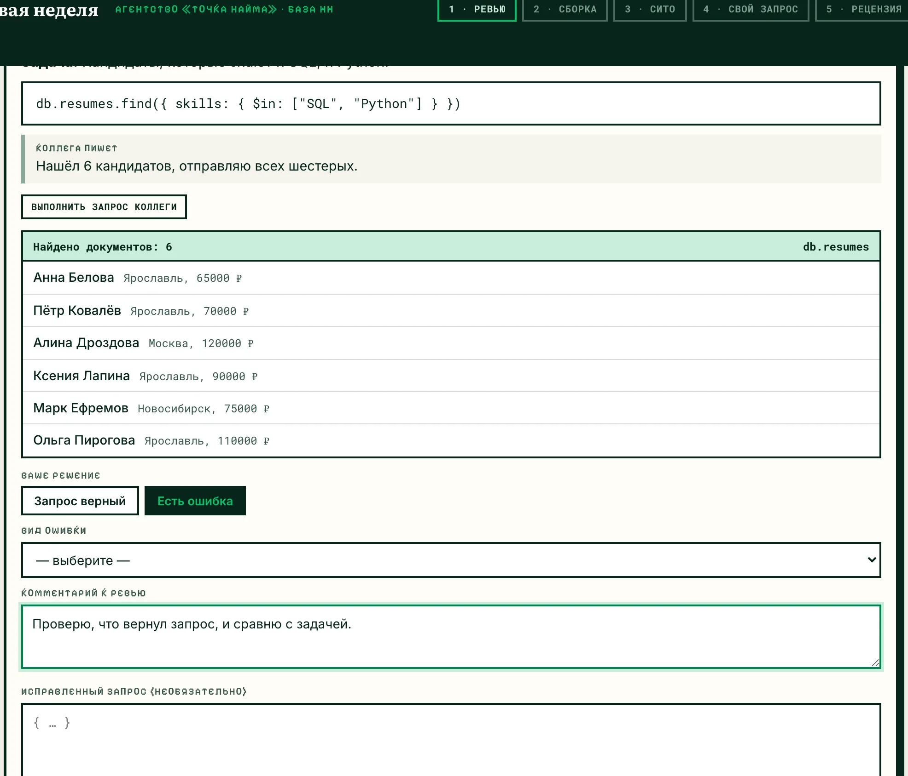
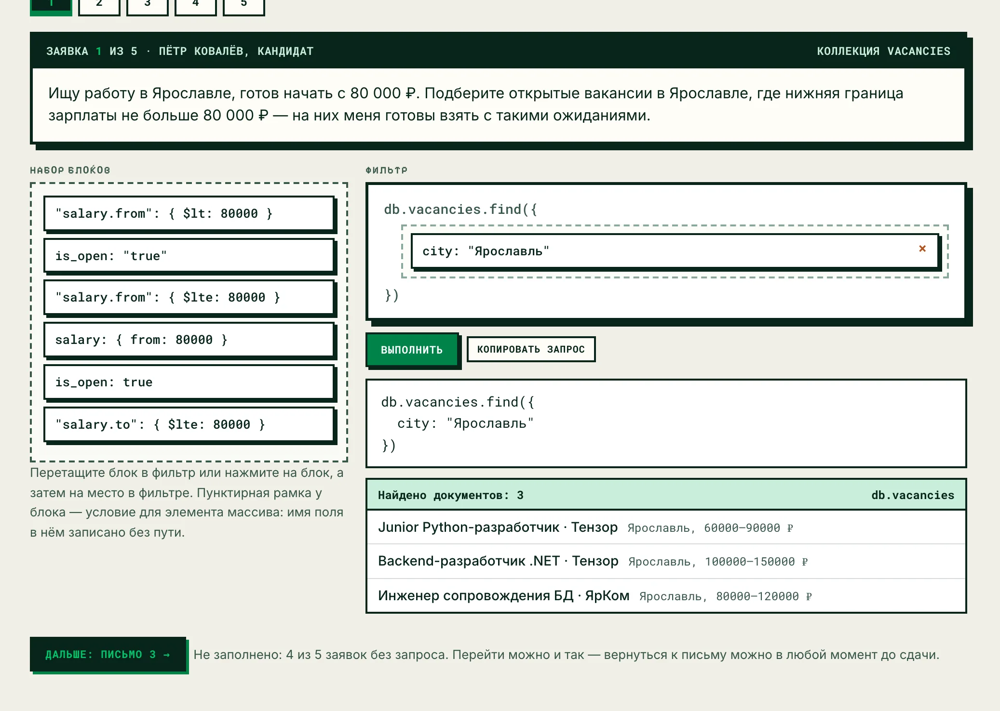
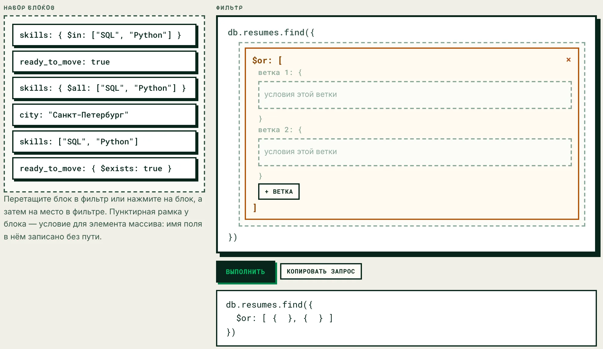
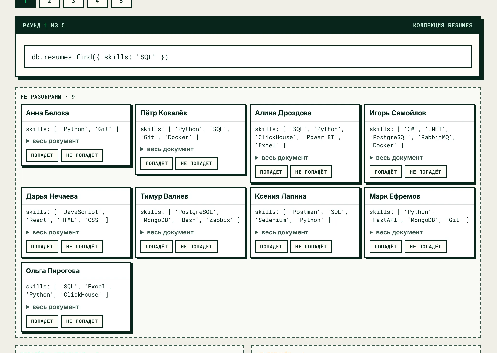
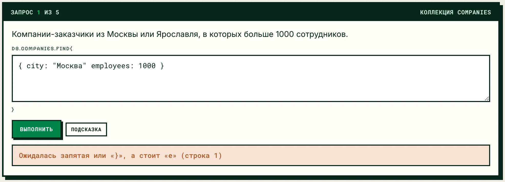
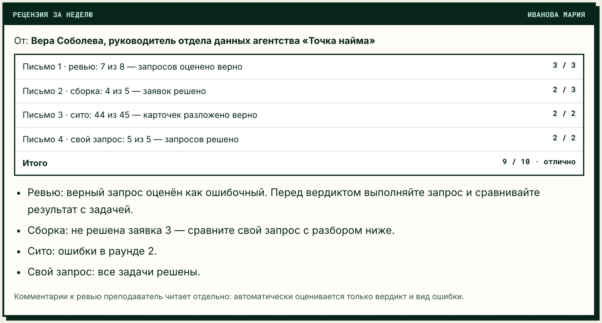

Справочник по MongoDB · модуль 2 · практикум
ПРАКТИКУМ
Аналитик данных:
первая неделя
Ролевой практикум по языку фильтров MongoDB. Студент неделю работает младшим аналитиком в кадровом агентстве: проверяет запросы коллег, собирает запросы по заявкам заказчиков, предсказывает результат фильтра и пишет запросы сам. В пятницу руководитель присылает рецензию на всю работу.

§1Легенда
Кадровое агентство «Точка найма» подбирает IT-специалистов для компаний Москвы, Ярославля, Казани и Санкт-Петербурга. Данные агентства лежат в MongoDB, в базе hh: резюме кандидатов, вакансии, компании-заказчики и собеседования. Это та же база, на которой построены главы 2.1–2.9 справочника, поэтому документы уже знакомы.
В отделе данных агентства запрос для заказчика пишет один аналитик, а проверяет второй. Новый сотрудник в первую неделю делает и то и другое: сначала проверяет чужие запросы, затем собирает и пишет свои. Задания приходят письмами от руководителя отдела.
Агентство, его сотрудники и кандидаты придуманы для практикума. Названия компаний-заказчиков взяты из базы hh без изменений.
Первая неделя в агентстве. Проверяет запросы коллег, выполняет заявки заказчиков, пишет запросы сам.
Присылает четыре письма с заданиями и в конце недели — рецензию с баллами.
Авторы восьми запросов на ревью. В каждой карточке — задача, запрос и что коллега написал заказчику.
Кандидат Пётр Ковалёв, компании Retail Lab и Р‑Фарм, отдел подбора Яндекса и отдел качества данных агентства.
§2Зачем практикум в форме рабочей недели
В практических работах модуля формулировка задачи обычно подсказывает оператор: «найдите документы, где навыки содержат и SQL, и Python» ведёт к $all. В заявке заказчика оператор не назван, его выбирает аналитик. Кроме того, аналитик проверяет запросы коллег.
Практикум построен как рабочая неделя нового сотрудника. Каждое письмо отрабатывает один навык:
Найти ошибку в готовом запросе и сказать, как её исправить. Результат запроса виден; соответствует ли он задаче, решает студент.
Собрать запрос из блоков, среди которых есть почти верные: $lt рядом с $lte, $in рядом с $all.
Решить без запуска, какие документы вернёт фильтр. Для этого нужны правила сопоставления из глав 2.1–2.6.
Перевести задачу заказчика в фильтр без готовых блоков.
Во время работы баллы не показываются. Кнопка «Выполнить» выводит найденные документы, и подходят ли они под задачу, студент определяет сам. Баллы и разбор всех заданий появляются после сдачи, в рецензии.
Так же устроен практикум «Архитектор по заявке» в справочнике System design: легенда, письма и рецензия в конце. В нём по письмам компании собирается схема системы, и данные раскладываются по базам.
§3Неделя по письмам
Следующее письмо открывается кнопкой «Дальше» внизу текущего. Переход не зависит от ответов в предыдущем письме. До сдачи к любому открытому письму можно вернуться и поменять ответ.
Ревью запросов коллег
Восемь запросов от Дениса, Полины и Глеба. В карточке — задача заказчика, сам запрос и что коллега написал по результату. Кнопка «Выполнить запрос коллеги» показывает, какие документы запрос вернул.
- решение: «Запрос верный» или «Есть ошибка»;
- для ошибки — вид из списка девяти вариантов;
- комментарий: что не так и как исправить;
- по желанию — исправленный запрос, его тоже можно выполнить.

Сборка запросов из блоков
Пять заявок от заказчиков. Условия для запросов написали стажёры, часть из них содержит ошибки. Блоки переносятся из набора в фильтр перетаскиванием или нажатиями. Под фильтром показан текст запроса, который выполняется, и найденные документы.
Есть два составных блока: $or с ветками, условия которых соединяются через «или», и $elemMatch, который собирает условия для одного элемента массива.

Блок $or с ветками
Блок $or кладётся в фильтр целиком, затем в его ветки переносятся условия. Кнопка «+ ветка» добавляет ветку. Крестик возвращает блок в набор вместе с условиями внутри.

Сито: результат до запуска
Пять фильтров по коллекции resumes и девять резюме. В каждом раунде резюме раскладываются по двум колонкам: «Попадёт в результат» и «Не попадёт». На карточке показаны поля, которые проверяет фильтр; кнопка «весь документ» открывает резюме целиком.
Фильтры построены на правилах из глав 2.1–2.6: поле-массив, $ne и отсутствующее поле, сравнение с null, условия на массив документов.

Свой запрос
Пять задач, фильтр к которым пишется вручную в синтаксисе mongosh. При ошибке разбора показывается, что не так и в какой строке. У каждой задачи есть подсказка, она открывается кнопкой. В конце письма — кнопка «Сдать работу».

Рецензия за неделю
После сдачи ответы закрываются и открывается рецензия: баллы по каждому письму, итоговая оценка и список тем для повторения. Ниже — разбор каждого задания: ответ студента, верный ответ и объяснение. Для собранных и написанных запросов отмечено, какие документы лишние, а каких не хватает.

§4Как работать на рабочем столе
| Действие | Как сделать |
|---|---|
| Перенести блок или карточку | Перетащить мышью. Или нажать на блок, затем на место в фильтре — этот способ работает и на планшете. |
| Вернуть блок в набор | Крестик справа на блоке. |
| Условие для элемента массива | Блок с пунктирной рамкой. Имя поля в нём записано без пути, например months вместо experience.months. Такой блок кладут внутрь $elemMatch. |
| Перейти к другой заявке или раунду | Кнопки с номерами над заданием. |
| Перейти к следующему письму | Кнопка «Дальше» внизу письма. Вкладки открытых писем остаются доступны. |
| Сдать работу | Кнопка внизу письма 4. Пропущенные ответы засчитываются как неверные. |
§5Где выполняются запросы
Фильтры выполняются в браузере на копии базы hh со стенда курса, поэтому сервер MongoDB для практикума не нужен. Поддерживаются операторы модуля 2. Каждый запрос практикума и набор каверзных случаев сверены с сервером MongoDB 7: результат на странице совпадает с результатом в mongosh и Compass, включая порядок документов.
В поле ввода можно писать только фильтр — { skills: … } — или вызов целиком: db.resumes.find({ … }). Ключи пишутся без кавычек или в кавычках, строки — в одинарных или двойных кавычках, даты — ISODate("2026-09-01"), шаблоны — /python/i. Собранный или написанный запрос можно скопировать и выполнить на своём стенде: результат будет тот же.
§6Рецензия и оценка
Баллы рецензия считает по шкале ниже. Комментарии к ревью преподаватель читает отдельно: автоматически оценивается только решение по запросу и вид ошибки.
| Письмо | Что считается | Баллы |
|---|---|---|
| 1 · ревью | Верно оценены запросы (решение и вид ошибки): 7–8 — 3 балла, 5–6 — 2, 3–4 — 1 | 3 |
| 2 · сборка | Решены заявки: 5 — 3 балла, 4 — 2, 2–3 — 1 | 3 |
| 3 · сито | Верно разложены карточки: 40–45 — 2 балла, 32–39 — 1 | 2 |
| 4 · свой запрос | Решены запросы: 5 — 2 балла, 3–4 — 1 | 2 |
| Итого | 10 | |
Перевод в оценку: 9–10 баллов — «отлично», 7–8 — «хорошо», 5–6 — «удовлетворительно».
Что сдать: на вкладке «Рецензия» укажите фамилию, имя и группу и скачайте файл analitik_<фамилия>.md. В нём рецензия с баллами, решения по всем письмам, комментарии к ревью и тексты запросов.
§7Вопросы
Можно ли пройти практикум дома?
Да. Рабочий стол открывается в любом браузере, сервер не нужен. Работа хранится в том браузере, где её начали: на другом компьютере она не появится. Перед сменой компьютера сдайте работу и скачайте отчёт.
Что будет, если закрыть вкладку?
Ответы сохраняются при каждом изменении и появляются снова при следующем открытии рабочего стола в том же браузере.
Можно ли переделать работу после сдачи?
Нет, после сдачи ответы закрыты. Сбросить работу может только преподаватель — кнопкой «Сбросить работу» с паролем.
Почему по ходу работы не видно, верно ли решено?
Сверка результата с задачей входит в задание. Кнопка «Выполнить» показывает найденные документы, их нужно сравнить с задачей самостоятельно. Баллы появляются в рецензии после сдачи.